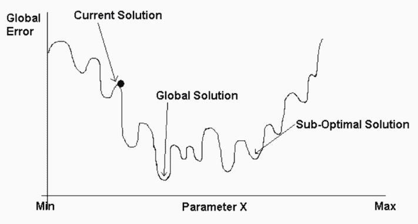
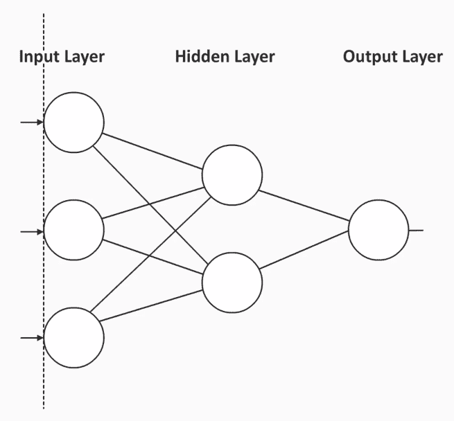
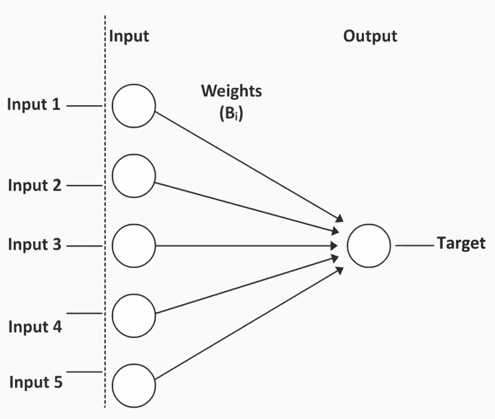
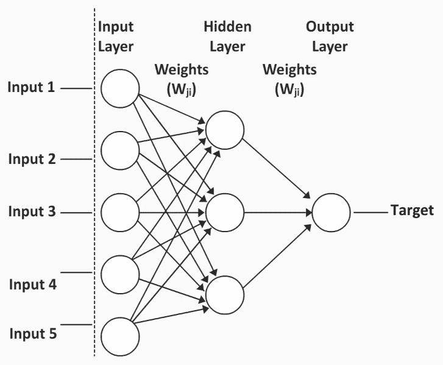
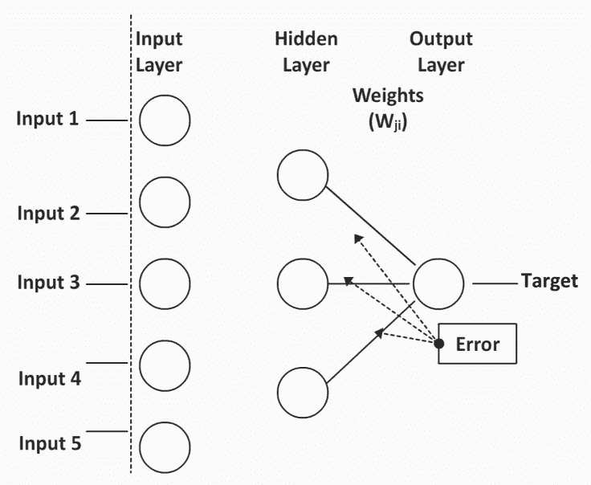
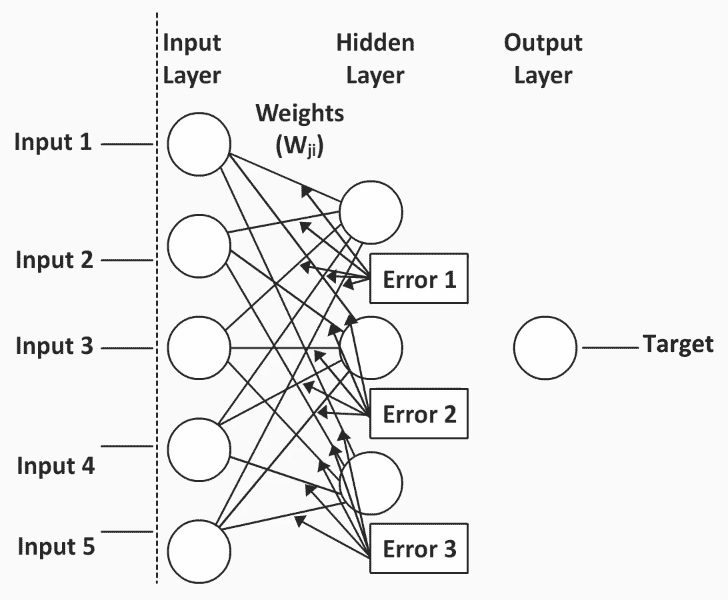

很大比例的数据挖掘机会涉及机器学习，这些机会往往伴随着更大的经济回报。本章将为您提供将机器学习的力量引入数据挖掘工作所需的基础知识。在这一章中，我们将讨论机器学习模型的特征，并查看这些模型的一些示例。
以下是我们将在本章中涉及的主题:
了解机器学习预测模型的特征将有助于您了解与任何统计或决策树模型相比的优势和局限性。
让我们来了解一下机器学习中预测模型的一些特征:
如果你想预测什么，这些模型做得相当好，并且有惊人的准确性。但是，如果你想知道为什么会预测某个东西，如果你希望在实现中做一些改变，这样你就不会得到一个特定的预测，那么就很难破译。
以下是一些不同类型的机器学习预测模型:
我们不会涵盖所有这些，但我们将重点关注一个非常有趣的模型——神经网络。在下面的章节中，我们将深入了解什么是神经网络。
神经网络最初是为了理解大脑如何运作而开发的。最初用于神经科学和语言学领域。
在这些领域中，研究人员注意到环境中发生了一些事情(输入)，个体对信息进行处理(在大脑中)，然后以某种方式做出反应(输出)。
所以，神经网络背后的想法是，它们将充当大脑，就像一个黑匣子。然后，我们必须努力弄清楚发生了什么，以便能够应用这些发现。
以下是使用神经网络的优点:
好的模型是以一些缺点为代价的:
在构建我们的神经网络时，我们的实际目标是构建可能的最佳解决方案，而不是陷入次优方案。我们需要多次运行神经网络。
以此误差图为例:

这是一个描述不同解决方案中误差量的图表。全局解决方案是可能的最佳解决方案，并且确实是最优的。一个次优解决方案是一个终止、停滞、不再改进的解决方案，但它不是真正的最佳解决方案。
有不同类型的神经网络可供我们使用；在本节中，我们将深入了解这些问题。
最常见的类型叫做多层感知器模型。这个神经网络模型由用圆圈表示的神经元组成，如下图所示。这些神经元被组织成层:

每个多层感知器模型至少有三层:
您还会注意到，在上图中，一个层中的每个神经元都与下一层中的每个神经元相连。这就形成了连接，每条连接线都会有一个与之相关的权重。这些权重将在模型中形成不同的方程。
重量很重要，原因有几个。首先，因为一层中的所有神经元都与下一层中的每个神经元相连，这意味着这些层是相连的。这也意味着一个神经网络模型，不像许多其他模型，不会丢弃任何预测器。例如，你可能从20个预测值开始，这20个预测值将被保留。权重之所以重要的第二个原因是它们提供了关于每个预测因子对预测的影响或重要性的信息。如稍后将示出的，这些权重开始时是随机的，然而通过多次迭代，权重被修改以提供有意义的信息。
这里，我们将看一个多层感知器模型的例子。我们将尝试根据个人的年龄、收入和性别来预测特定商品的潜在买家。
例如，考虑以下情况:
如您所见，我们形成输入层的输入预测因子是年龄、收入和性别。构成我们输出层的结果变量是购买，它将决定某人是否购买了一件产品。有一个隐藏层，输入预测值最终在这里组合。
为了更好地理解神经网络模型背后发生的事情，让我们来看看线性回归模型。
让我们借助一个例子来理解线性回归模型。
请考虑以下情况:

在线性回归中，输入层中的每个输入预测值都通过单个连接权重连接到结果字段，也称为系数，这些系数通过数据的单次传递进行估计。系数的数量将等于预测值的数量。这意味着每个预测值都有一个相关的系数。
每个输入预测器都直接连接到目标上，并以一个特定的系数作为其权重。因此，我们可以很容易地看到输入预测值的一个单位变化对结果变量或目标的影响。这些类型的连接使得确定每个预测值对目标变量以及方程的影响变得容易。
让我们用一个例子来更详细地理解神经网络:

注意输入层中的每个神经元都连接到隐藏层中的每个神经元，例如输入1 连接到隐藏层中的第一个、第二个甚至第三个神经元。这意味着将有三个不同的权重，并且这些权重将是三个不同等式的一部分。
这是本例中发生的情况:
那么，让我们继续下去，看看这些权重是如何确定的，以及我们如何才能形成一个功能性的神经网络。
前馈反向传播是一种方法，通过这种方法，我们可以预测权重等事物，并最终预测神经网络的结果。
根据这种方法，预测会出现以下迭代:

这种反向传播不仅发生在隐藏层和目标层之间，还会发生在输入层:

当这些迭代发生时，我们实际上通过每次误差传播使我们的神经网络变得越来越好。现在，这种连接使得神经网络能够学习数据中的不同模式。
因此，与任何线性回归或决策树模型不同，神经网络试图学习数据中的模式。如果有足够的时间来学习这些模式，神经网络结合其经验，可以更好地理解和预测，在很大程度上提高准确率。
在训练神经网络模型时，不要用整个数据集来训练模型。出于测试目的，我们需要保留一些数据。这将允许我们测试神经网络是否能够将它从训练数据集学到的东西应用到新数据。
我们希望神经网络能够很好地归纳新数据，并捕捉不同类型数据的共性，而不仅仅是使其成为特定样本的细微差别。相反，我们希望结果也能转换成新数据。模型定型后，可以使用模型的经验预测新数据。
我希望你现在清楚机器学习预测模型，并理解基本概念。在本章中，我们已经看到了机器学习预测模型的特征，并了解了一些不同的类型。这些概念是后续章节的踏脚石。我们还看了一个基本神经网络模型的例子。在下一章，我们将在一个数据集上实现一个活的神经网络，你也将被介绍到支持向量机及其实现。